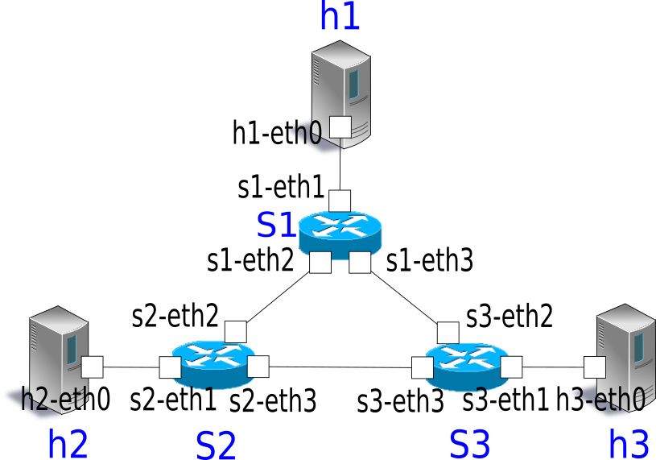
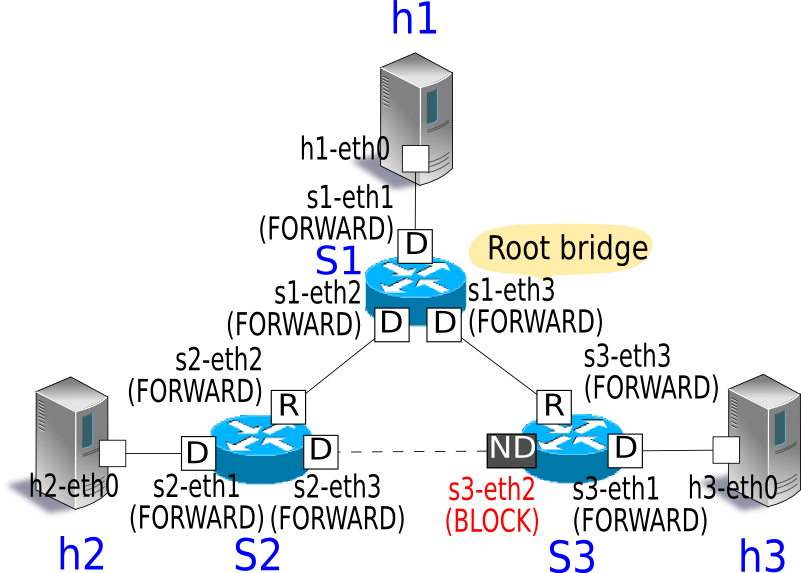
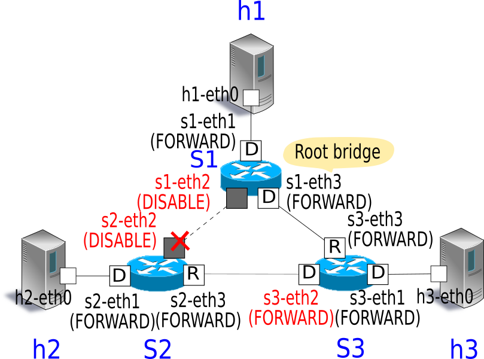

Spanning Tree¶
This section describes how to implement spanning tree using Ryu.
Spanning tree¶
Spanning tree is a function that suppresses occurrence of broadcast streams in a network having a loop structure. Also, applying the original function that is preventing the loop, it is used as a means to secure network redundancy to automatically switch the path in case of a network failure.
There are various types of spanning tree, including STP, RSTP, PVST+, and MSTP. In this section, we will take a look at implementation of the most basic STP.
Spanning Tree Protocol (STP: IEEE 802.1D) handles a network as a logical tree and by setting the ports of each switch (sometimes called a bridge in this section) to transfer frame or not it suppresses occurrence of broadcast streams in a network having a loop structure.

With STP, Bridge Protocol Data Unit (BPDU) packets are exchanged between bridges to compare the bridge and port information and decide whether or not frame transfer of each port is available.
Specifically, this is achieved by the following procedure:
1 Selecting the root bridge
The bridge having the smallest bridge ID is selected as the root bridge through BPDU packet exchange between bridges. After that, only the root bridge sends the original BPDU packet and other bridges transfer BPDU packets received from the root bridge.
Note
The bridge ID is calculated through a combination of the bridge priority set for each bridge and the MAC address of the specific port.
Bridge ID
Upper 2byte Lower 6byte Bridge priority MAC address
2 Deciding the role of ports
Based on the cost of each port to reach the root bridge, decide the role of the ports.
Root port
The port having the smallest cost among bridges to reach the root bridge. This port receives BPDU packets from the root bridge.
Designated ports
Ports at the side having the small cost to reach the root bridge of each link. These ports sends BPDU packets received from the root bridge. Root bridge ports are all designated ports.
Non designated ports
Ports other than the root port and designated port. These ports suppress frame transfer.

Note
The cost to reach the root bridge is compared as follows based on the setting value of the BPDU packet received by each port.
Priority 1: Compares by the root path cost value.
When each bridge transfers a BPDU packet, the path cost value set for the output port is added to the root path cost value of the BPDU packet. Because of this, the root path cost value is the total value of the path cost value of each link passed through to reach the root bridge.Priority 2: When the root path cost is the same, compares using the bridge ID of the counterpart bridges.
Priority 3: When the bridge ID of the counterpart bridges are the same (in cases in which each port is connected to the same bridge), compare using the port ID of the counterpart ports.
Port ID
Upper 2 bytes Lower 2 bytes Port priority Port number
3 Port state change
After the port role is decided (STP calculation is completed), each port becomes LISTEN state. After that, the state changes as shown below and according to the role of each port, it eventually becomes FORWARD state or BLOCK state. Ports set as disabled ports in the configuration become DISABLE state and after that the change of state does not take place.

Each port decides operations such as frame transfer availability according to the state.
| State | Operation |
|---|---|
| DISABLE | Disabled port. Ignores all received packets. |
| BLOCK | Receives BPDU only. |
| LISTEN | Sends and receives BPDU. |
| LEARN | Sends and receives BPDU, learns MAC. |
| FORWARD | Sends and receives BPDU, learns MAC, transfers frames. |
When that processing is executed at each bridge, ports that transfer frames and ports that suppress frame transfer are decided to dissolve loops inside the network.
Also, when failure is detected due to link down or no reception of BPDU packet for the max age (default: 20 seconds), or a change in the network topology is detected as a result of the addition of a port, each bridge executes 1, 2, and 3 above to reconfigure the tree (STP re-calculation).
Executing the Ryu Application¶
Let’s execute the Ryu’s spanning tree application for which the spanning function is achieved using OpenFlow.
simple_switch_stp.py provided in Ryu’s source tree is an application dedicated to OpenFlow 1.0, therefore, we will create simple_switch_stp_13.py, which supports OpenFlow 1.3. This program is an application to which the spanning tree function has been added to the switching hub of ” Switching Hub .
Source name: simple_switch_stp_13.py
from ryu.base import app_manager
from ryu.controller import ofp_event
from ryu.controller.handler import CONFIG_DISPATCHER, MAIN_DISPATCHER
from ryu.controller.handler import set_ev_cls
from ryu.ofproto import ofproto_v1_3
from ryu.lib import dpid as dpid_lib
from ryu.lib import stplib
from ryu.lib.packet import packet
from ryu.lib.packet import ethernet
class SimpleSwitch13(app_manager.RyuApp):
OFP_VERSIONS = [ofproto_v1_3.OFP_VERSION]
_CONTEXTS = {'stplib': stplib.Stp}
def __init__(self, *args, **kwargs):
super(SimpleSwitch13, self).__init__(*args, **kwargs)
self.mac_to_port = {}
self.stp = kwargs['stplib']
# Sample of stplib config.
# please refer to stplib.Stp.set_config() for details.
config = {dpid_lib.str_to_dpid('0000000000000001'):
{'bridge': {'priority': 0x8000}},
dpid_lib.str_to_dpid('0000000000000002'):
{'bridge': {'priority': 0x9000}},
dpid_lib.str_to_dpid('0000000000000003'):
{'bridge': {'priority': 0xa000}}}
self.stp.set_config(config)
@set_ev_cls(ofp_event.EventOFPSwitchFeatures, CONFIG_DISPATCHER)
def switch_features_handler(self, ev):
datapath = ev.msg.datapath
ofproto = datapath.ofproto
parser = datapath.ofproto_parser
# install table-miss flow entry
#
# We specify NO BUFFER to max_len of the output action due to
# OVS bug. At this moment, if we specify a lesser number, e.g.,
# 128, OVS will send Packet-In with invalid buffer_id and
# truncated packet data. In that case, we cannot output packets
# correctly.
match = parser.OFPMatch()
actions = [parser.OFPActionOutput(ofproto.OFPP_CONTROLLER,
ofproto.OFPCML_NO_BUFFER)]
self.add_flow(datapath, 0, match, actions)
def add_flow(self, datapath, priority, match, actions):
ofproto = datapath.ofproto
parser = datapath.ofproto_parser
inst = [parser.OFPInstructionActions(ofproto.OFPIT_APPLY_ACTIONS,
actions)]
mod = parser.OFPFlowMod(datapath=datapath, priority=priority,
match=match, instructions=inst)
datapath.send_msg(mod)
def delete_flow(self, datapath):
ofproto = datapath.ofproto
parser = datapath.ofproto_parser
for dst in self.mac_to_port[datapath.id].keys():
match = parser.OFPMatch(eth_dst=dst)
mod = parser.OFPFlowMod(
datapath, command=ofproto.OFPFC_DELETE,
out_port=ofproto.OFPP_ANY, out_group=ofproto.OFPG_ANY,
priority=1, match=match)
datapath.send_msg(mod)
@set_ev_cls(stplib.EventPacketIn, MAIN_DISPATCHER)
def _packet_in_handler(self, ev):
msg = ev.msg
datapath = msg.datapath
ofproto = datapath.ofproto
parser = datapath.ofproto_parser
in_port = msg.match['in_port']
pkt = packet.Packet(msg.data)
eth = pkt.get_protocols(ethernet.ethernet)[0]
dst = eth.dst
src = eth.src
dpid = datapath.id
self.mac_to_port.setdefault(dpid, {})
self.logger.info("packet in %s %s %s %s", dpid, src, dst, in_port)
# learn a mac address to avoid FLOOD next time.
self.mac_to_port[dpid][src] = in_port
if dst in self.mac_to_port[dpid]:
out_port = self.mac_to_port[dpid][dst]
else:
out_port = ofproto.OFPP_FLOOD
actions = [parser.OFPActionOutput(out_port)]
# install a flow to avoid packet_in next time
if out_port != ofproto.OFPP_FLOOD:
match = parser.OFPMatch(in_port=in_port, eth_dst=dst)
self.add_flow(datapath, 1, match, actions)
data = None
if msg.buffer_id == ofproto.OFP_NO_BUFFER:
data = msg.data
out = parser.OFPPacketOut(datapath=datapath, buffer_id=msg.buffer_id,
in_port=in_port, actions=actions, data=data)
datapath.send_msg(out)
@set_ev_cls(stplib.EventTopologyChange, MAIN_DISPATCHER)
def _topology_change_handler(self, ev):
dp = ev.dp
dpid_str = dpid_lib.dpid_to_str(dp.id)
msg = 'Receive topology change event. Flush MAC table.'
self.logger.debug("[dpid=%s] %s", dpid_str, msg)
if dp.id in self.mac_to_port:
self.delete_flow(dp)
del self.mac_to_port[dp.id]
@set_ev_cls(stplib.EventPortStateChange, MAIN_DISPATCHER)
def _port_state_change_handler(self, ev):
dpid_str = dpid_lib.dpid_to_str(ev.dp.id)
of_state = {stplib.PORT_STATE_DISABLE: 'DISABLE',
stplib.PORT_STATE_BLOCK: 'BLOCK',
stplib.PORT_STATE_LISTEN: 'LISTEN',
stplib.PORT_STATE_LEARN: 'LEARN',
stplib.PORT_STATE_FORWARD: 'FORWARD'}
self.logger.debug("[dpid=%s][port=%d] state=%s",
dpid_str, ev.port_no, of_state[ev.port_state])
Note
If using the Open vSwitch, this application dose not wrok well depending on the Open vSwitch’s settings or version. Open vSwitch has the STP implementation, but if this option is disabled (by default), Open vSwitch drops the STP (BPDU) packets with the dest mac address “01:80:c2:00:00:00” specified in IEEE 802.1D. For only executing this application, you can avoid this constraint by modifying the source code as follows.
ryu/ryu/lib/packet/bpdu.py:
# BPDU destination
#BRIDGE_GROUP_ADDRESS = '01:80:c2:00:00:00'
BRIDGE_GROUP_ADDRESS = '01:80:c2:00:00:0e'
Then, execute the following commands to affect the modification.
$ cd ryu
$ sudo python setup.py install
running install
...
...
running install_scripts
Installing ryu-manager script to /usr/local/bin
Installing ryu script to /usr/local/bin
Configuring the Experimental Environment¶
Let’s configure an experimental environment to confirm operation of the spanning tree application.
For details on environment configuration and the login method, etc. to use VM images, refer to ” Switching Hub ”.
To operate using a special topology having a loop structure, as with ” Link Aggregation ”, using the topology configuration script, configure a mininet environment.
Source name: spanning_tree.py
#!/usr/bin/env python
from mininet.cli import CLI
from mininet.link import Link
from mininet.net import Mininet
from mininet.node import RemoteController
from mininet.term import makeTerm
if '__main__' == __name__:
net = Mininet(controller=RemoteController)
c0 = net.addController('c0')
s1 = net.addSwitch('s1')
s2 = net.addSwitch('s2')
s3 = net.addSwitch('s3')
h1 = net.addHost('h1')
h2 = net.addHost('h2')
h3 = net.addHost('h3')
Link(s1, h1)
Link(s2, h2)
Link(s3, h3)
Link(s1, s2)
Link(s2, s3)
Link(s3, s1)
net.build()
c0.start()
s1.start([c0])
s2.start([c0])
s3.start([c0])
net.startTerms()
CLI(net)
net.stop()
By executing the program in the VM environment, a topology is created in which a loop exists between switches s1, s2, and s3.
{kind=link}
The execution result of the net command is as follows:
ryu@ryu-vm:~$ sudo ./spanning_tree.py
Unable to contact the remote controller at 127.0.0.1:6633
mininet> net
c0
s1 lo: s1-eth1:h1-eth0 s1-eth2:s2-eth2 s1-eth3:s3-eth3
s2 lo: s2-eth1:h2-eth0 s2-eth2:s1-eth2 s2-eth3:s3-eth2
s3 lo: s3-eth1:h3-eth0 s3-eth2:s2-eth3 s3-eth3:s1-eth3
h1 h1-eth0:s1-eth1
h2 h2-eth0:s2-eth1
h3 h3-eth0:s3-eth1
Setting the OpenFlow Version¶
Set the OpenFlow version to 1.3. Input this command on xterm of switches s1, s2, and x3.
Node: s1:
root@ryu-vm:~# ovs-vsctl set Bridge s1 protocols=OpenFlow13
Node: s2:
root@ryu-vm:~# ovs-vsctl set Bridge s2 protocols=OpenFlow13
Node: s3:
root@ryu-vm:~# ovs-vsctl set Bridge s3 protocols=OpenFlow13
Executing the Switching Hub¶
This completes preparation so let’s move on to executing the Ryu application. Execute the following commands from xterm for which the window title is “Node: c0 (root)”.
Node: c0:
root@ryu-vm:~$ ryu-manager ./simple_switch_stp_13.py
loading app simple_switch_stp_13.py
loading app ryu.controller.ofp_handler
loading app ryu.controller.ofp_handler
instantiating app None of Stp
creating context stplib
instantiating app simple_switch_stp_13.py of SimpleSwitch13
instantiating app ryu.controller.ofp_handler of OFPHandler
Calculating STP Upon OpenFlow Swtich Starts¶
When connection between each OpenFlow switch and the controller is completed, exchange of BPDU packets starts and root bridge selection, port role setting, and port state change takes place.
[STP][INFO] dpid=0000000000000001: Join as stp bridge.
[STP][INFO] dpid=0000000000000001: [port=1] DESIGNATED_PORT / LISTEN
[STP][INFO] dpid=0000000000000001: [port=2] DESIGNATED_PORT / LISTEN
[STP][INFO] dpid=0000000000000001: [port=3] DESIGNATED_PORT / LISTEN
[STP][INFO] dpid=0000000000000002: Join as stp bridge.
[STP][INFO] dpid=0000000000000002: [port=1] DESIGNATED_PORT / LISTEN
[STP][INFO] dpid=0000000000000002: [port=2] DESIGNATED_PORT / LISTEN
[STP][INFO] dpid=0000000000000002: [port=3] DESIGNATED_PORT / LISTEN
[STP][INFO] dpid=0000000000000001: [port=2] Receive superior BPDU.
[STP][INFO] dpid=0000000000000001: [port=1] DESIGNATED_PORT / BLOCK
[STP][INFO] dpid=0000000000000001: [port=2] DESIGNATED_PORT / BLOCK
[STP][INFO] dpid=0000000000000001: [port=3] DESIGNATED_PORT / BLOCK
[STP][INFO] dpid=0000000000000001: Root bridge.
[STP][INFO] dpid=0000000000000001: [port=1] DESIGNATED_PORT / LISTEN
[STP][INFO] dpid=0000000000000001: [port=2] DESIGNATED_PORT / LISTEN
[STP][INFO] dpid=0000000000000001: [port=3] DESIGNATED_PORT / LISTEN
[STP][INFO] dpid=0000000000000002: [port=2] Receive superior BPDU.
[STP][INFO] dpid=0000000000000002: [port=1] DESIGNATED_PORT / BLOCK
[STP][INFO] dpid=0000000000000002: [port=2] DESIGNATED_PORT / BLOCK
[STP][INFO] dpid=0000000000000002: [port=3] DESIGNATED_PORT / BLOCK
[STP][INFO] dpid=0000000000000002: Non root bridge.
[STP][INFO] dpid=0000000000000002: [port=1] DESIGNATED_PORT / LISTEN
[STP][INFO] dpid=0000000000000002: [port=2] ROOT_PORT / LISTEN
[STP][INFO] dpid=0000000000000002: [port=3] DESIGNATED_PORT / LISTEN
[STP][INFO] dpid=0000000000000003: Join as stp bridge.
[STP][INFO] dpid=0000000000000003: [port=1] DESIGNATED_PORT / LISTEN
[STP][INFO] dpid=0000000000000003: [port=2] DESIGNATED_PORT / LISTEN
[STP][INFO] dpid=0000000000000003: [port=3] DESIGNATED_PORT / LISTEN
[STP][INFO] dpid=0000000000000002: [port=3] Receive superior BPDU.
[STP][INFO] dpid=0000000000000002: [port=1] DESIGNATED_PORT / BLOCK
[STP][INFO] dpid=0000000000000002: [port=2] DESIGNATED_PORT / BLOCK
[STP][INFO] dpid=0000000000000002: [port=3] DESIGNATED_PORT / BLOCK
[STP][INFO] dpid=0000000000000002: Non root bridge.
[STP][INFO] dpid=0000000000000002: [port=1] DESIGNATED_PORT / LISTEN
[STP][INFO] dpid=0000000000000002: [port=2] ROOT_PORT / LISTEN
[STP][INFO] dpid=0000000000000002: [port=3] DESIGNATED_PORT / LISTEN
[STP][INFO] dpid=0000000000000001: [port=3] Receive superior BPDU.
[STP][INFO] dpid=0000000000000001: [port=1] DESIGNATED_PORT / BLOCK
[STP][INFO] dpid=0000000000000001: [port=2] DESIGNATED_PORT / BLOCK
[STP][INFO] dpid=0000000000000001: [port=3] DESIGNATED_PORT / BLOCK
[STP][INFO] dpid=0000000000000001: Root bridge.
[STP][INFO] dpid=0000000000000001: [port=1] DESIGNATED_PORT / LISTEN
[STP][INFO] dpid=0000000000000001: [port=2] DESIGNATED_PORT / LISTEN
[STP][INFO] dpid=0000000000000001: [port=3] DESIGNATED_PORT / LISTEN
[STP][INFO] dpid=0000000000000003: [port=2] Receive superior BPDU.
[STP][INFO] dpid=0000000000000003: [port=1] DESIGNATED_PORT / BLOCK
[STP][INFO] dpid=0000000000000003: [port=2] DESIGNATED_PORT / BLOCK
[STP][INFO] dpid=0000000000000003: [port=3] DESIGNATED_PORT / BLOCK
[STP][INFO] dpid=0000000000000003: Non root bridge.
[STP][INFO] dpid=0000000000000003: [port=1] DESIGNATED_PORT / LISTEN
[STP][INFO] dpid=0000000000000003: [port=2] ROOT_PORT / LISTEN
[STP][INFO] dpid=0000000000000003: [port=3] DESIGNATED_PORT / LISTEN
[STP][INFO] dpid=0000000000000003: [port=3] Receive superior BPDU.
[STP][INFO] dpid=0000000000000003: [port=1] DESIGNATED_PORT / BLOCK
[STP][INFO] dpid=0000000000000003: [port=2] DESIGNATED_PORT / BLOCK
[STP][INFO] dpid=0000000000000003: [port=3] DESIGNATED_PORT / BLOCK
[STP][INFO] dpid=0000000000000003: Non root bridge.
[STP][INFO] dpid=0000000000000003: [port=1] DESIGNATED_PORT / LISTEN
[STP][INFO] dpid=0000000000000003: [port=2] NON_DESIGNATED_PORT / LISTEN
[STP][INFO] dpid=0000000000000003: [port=3] ROOT_PORT / LISTEN
[STP][INFO] dpid=0000000000000001: [port=3] Receive superior BPDU.
[STP][INFO] dpid=0000000000000001: [port=1] DESIGNATED_PORT / BLOCK
[STP][INFO] dpid=0000000000000001: [port=2] DESIGNATED_PORT / BLOCK
[STP][INFO] dpid=0000000000000001: [port=3] DESIGNATED_PORT / BLOCK
[STP][INFO] dpid=0000000000000001: Root bridge.
[STP][INFO] dpid=0000000000000001: [port=1] DESIGNATED_PORT / LISTEN
[STP][INFO] dpid=0000000000000001: [port=2] DESIGNATED_PORT / LISTEN
[STP][INFO] dpid=0000000000000001: [port=3] DESIGNATED_PORT / LISTEN
[STP][INFO] dpid=0000000000000002: [port=1] DESIGNATED_PORT / LEARN
[STP][INFO] dpid=0000000000000002: [port=2] ROOT_PORT / LEARN
[STP][INFO] dpid=0000000000000002: [port=3] DESIGNATED_PORT / LEARN
[STP][INFO] dpid=0000000000000003: [port=1] DESIGNATED_PORT / LEARN
[STP][INFO] dpid=0000000000000003: [port=2] NON_DESIGNATED_PORT / LEARN
[STP][INFO] dpid=0000000000000003: [port=3] ROOT_PORT / LEARN
[STP][INFO] dpid=0000000000000001: [port=1] DESIGNATED_PORT / LEARN
[STP][INFO] dpid=0000000000000001: [port=2] DESIGNATED_PORT / LEARN
[STP][INFO] dpid=0000000000000001: [port=3] DESIGNATED_PORT / LEARN
[STP][INFO] dpid=0000000000000002: [port=1] DESIGNATED_PORT / FORWARD
[STP][INFO] dpid=0000000000000002: [port=2] ROOT_PORT / FORWARD
[STP][INFO] dpid=0000000000000002: [port=3] DESIGNATED_PORT / FORWARD
[STP][INFO] dpid=0000000000000003: [port=1] DESIGNATED_PORT / FORWARD
[STP][INFO] dpid=0000000000000003: [port=2] NON_DESIGNATED_PORT / BLOCK
[STP][INFO] dpid=0000000000000003: [port=3] ROOT_PORT / FORWARD
[STP][INFO] dpid=0000000000000001: [port=1] DESIGNATED_PORT / FORWARD
[STP][INFO] dpid=0000000000000001: [port=2] DESIGNATED_PORT / FORWARD
[STP][INFO] dpid=0000000000000001: [port=3] DESIGNATED_PORT / FORWARD
As a result, each port eventually becomes FORWARD state or BLOCK state.
{kind=link}
Next, in order to confirm that packets are not looped, execute ping from host 1 to host 2.
Before executing the ping command, execute the tcpdump command.
Node: s1:
root@ryu-vm:~# tcpdump -i s1-eth2 arp
Node: s2:
root@ryu-vm:~# tcpdump -i s2-eth2 arp
Node: s3:
root@ryu-vm:~# tcpdump -i s3-eth2 arp
On the console where the topology configuration script is executed, execute the following commands to issue a ping from host 1 to host 2.
mininet> h1 ping h2
PING 10.0.0.2 (10.0.0.2) 56(84) bytes of data.
64 bytes from 10.0.0.2: icmp_req=1 ttl=64 time=84.4 ms
64 bytes from 10.0.0.2: icmp_req=2 ttl=64 time=0.657 ms
64 bytes from 10.0.0.2: icmp_req=3 ttl=64 time=0.074 ms
64 bytes from 10.0.0.2: icmp_req=4 ttl=64 time=0.076 ms
64 bytes from 10.0.0.2: icmp_req=5 ttl=64 time=0.054 ms
64 bytes from 10.0.0.2: icmp_req=6 ttl=64 time=0.053 ms
64 bytes from 10.0.0.2: icmp_req=7 ttl=64 time=0.041 ms
64 bytes from 10.0.0.2: icmp_req=8 ttl=64 time=0.049 ms
64 bytes from 10.0.0.2: icmp_req=9 ttl=64 time=0.074 ms
64 bytes from 10.0.0.2: icmp_req=10 ttl=64 time=0.073 ms
64 bytes from 10.0.0.2: icmp_req=11 ttl=64 time=0.068 ms
^C
--- 10.0.0.2 ping statistics ---
11 packets transmitted, 11 received, 0% packet loss, time 9998ms
rtt min/avg/max/mdev = 0.041/7.784/84.407/24.230 ms
As a result of tcpdump output, you can confirm that ARP is not looped.
Node: s1:
root@ryu-vm:~# tcpdump -i s1-eth2 arp
tcpdump: WARNING: s1-eth2: no IPv4 address assigned
tcpdump: verbose output suppressed, use -v or -vv for full protocol decode
listening on s1-eth2, link-type EN10MB (Ethernet), capture size 65535 bytes
11:30:24.692797 ARP, Request who-has 10.0.0.2 tell 10.0.0.1, length 28
11:30:24.749153 ARP, Reply 10.0.0.2 is-at 82:c9:d7:e9:b7:52 (oui Unknown), length 28
11:30:29.797665 ARP, Request who-has 10.0.0.1 tell 10.0.0.2, length 28
11:30:29.798250 ARP, Reply 10.0.0.1 is-at c2:a4:54:83:43:fa (oui Unknown), length 28
Node: s2:
root@ryu-vm:~# tcpdump -i s2-eth2 arp
tcpdump: WARNING: s2-eth2: no IPv4 address assigned
tcpdump: verbose output suppressed, use -v or -vv for full protocol decode
listening on s2-eth2, link-type EN10MB (Ethernet), capture size 65535 bytes
11:30:24.692824 ARP, Request who-has 10.0.0.2 tell 10.0.0.1, length 28
11:30:24.749116 ARP, Reply 10.0.0.2 is-at 82:c9:d7:e9:b7:52 (oui Unknown), length 28
11:30:29.797659 ARP, Request who-has 10.0.0.1 tell 10.0.0.2, length 28
11:30:29.798254 ARP, Reply 10.0.0.1 is-at c2:a4:54:83:43:fa (oui Unknown), length 28
Node: s3:
root@ryu-vm:~# tcpdump -i s3-eth2 arp
tcpdump: WARNING: s3-eth2: no IPv4 address assigned
tcpdump: verbose output suppressed, use -v or -vv for full protocol decode
listening on s3-eth2, link-type EN10MB (Ethernet), capture size 65535 bytes
11:30:24.698477 ARP, Request who-has 10.0.0.2 tell 10.0.0.1, length 28
Re-Calculation When a Failure is Detected¶
Next, let’s check re-calculation operation of STP in case of link down. In the state in which STP calculation has been completed after each OpenFlow switch starts, execute the following commands to make the port down.
Node: s2:
root@ryu-vm:~# ifconfig s2-eth2 down
Link down is detected and recalculation of STP is executed.
[STP][INFO] dpid=0000000000000002: [port=2] Link down.
[STP][INFO] dpid=0000000000000002: [port=2] DESIGNATED_PORT / DISABLE
[STP][INFO] dpid=0000000000000002: [port=1] DESIGNATED_PORT / BLOCK
[STP][INFO] dpid=0000000000000002: [port=3] DESIGNATED_PORT / BLOCK
[STP][INFO] dpid=0000000000000002: Root bridge.
[STP][INFO] dpid=0000000000000002: [port=1] DESIGNATED_PORT / LISTEN
[STP][INFO] dpid=0000000000000002: [port=3] DESIGNATED_PORT / LISTEN
[STP][INFO] dpid=0000000000000001: [port=2] Link down.
[STP][INFO] dpid=0000000000000001: [port=2] DESIGNATED_PORT / DISABLE
[STP][INFO] dpid=0000000000000002: [port=1] DESIGNATED_PORT / LEARN
[STP][INFO] dpid=0000000000000002: [port=3] DESIGNATED_PORT / LEARN
[STP][INFO] dpid=0000000000000003: [port=2] Wait BPDU timer is exceeded.
[STP][INFO] dpid=0000000000000003: [port=1] DESIGNATED_PORT / BLOCK
[STP][INFO] dpid=0000000000000003: [port=2] DESIGNATED_PORT / BLOCK
[STP][INFO] dpid=0000000000000003: [port=3] DESIGNATED_PORT / BLOCK
[STP][INFO] dpid=0000000000000003: Root bridge.
[STP][INFO] dpid=0000000000000003: [port=1] DESIGNATED_PORT / LISTEN
[STP][INFO] dpid=0000000000000003: [port=2] DESIGNATED_PORT / LISTEN
[STP][INFO] dpid=0000000000000003: [port=3] DESIGNATED_PORT / LISTEN
[STP][INFO] dpid=0000000000000003: [port=3] Receive superior BPDU.
[STP][INFO] dpid=0000000000000003: [port=1] DESIGNATED_PORT / BLOCK
[STP][INFO] dpid=0000000000000003: [port=2] DESIGNATED_PORT / BLOCK
[STP][INFO] dpid=0000000000000003: [port=3] DESIGNATED_PORT / BLOCK
[STP][INFO] dpid=0000000000000003: Non root bridge.
[STP][INFO] dpid=0000000000000003: [port=1] DESIGNATED_PORT / LISTEN
[STP][INFO] dpid=0000000000000003: [port=2] DESIGNATED_PORT / LISTEN
[STP][INFO] dpid=0000000000000003: [port=3] ROOT_PORT / LISTEN
[STP][INFO] dpid=0000000000000002: [port=3] Receive superior BPDU.
[STP][INFO] dpid=0000000000000002: [port=1] DESIGNATED_PORT / BLOCK
[STP][INFO] dpid=0000000000000002: [port=3] DESIGNATED_PORT / BLOCK
[STP][INFO] dpid=0000000000000002: Non root bridge.
[STP][INFO] dpid=0000000000000002: [port=1] DESIGNATED_PORT / LISTEN
[STP][INFO] dpid=0000000000000002: [port=3] ROOT_PORT / LISTEN
[STP][INFO] dpid=0000000000000003: [port=1] DESIGNATED_PORT / LEARN
[STP][INFO] dpid=0000000000000003: [port=2] DESIGNATED_PORT / LEARN
[STP][INFO] dpid=0000000000000003: [port=3] ROOT_PORT / LEARN
[STP][INFO] dpid=0000000000000002: [port=1] DESIGNATED_PORT / LEARN
[STP][INFO] dpid=0000000000000002: [port=3] ROOT_PORT / LEARN
[STP][INFO] dpid=0000000000000003: [port=1] DESIGNATED_PORT / FORWARD
[STP][INFO] dpid=0000000000000003: [port=2] DESIGNATED_PORT / FORWARD
[STP][INFO] dpid=0000000000000003: [port=3] ROOT_PORT / FORWARD
[STP][INFO] dpid=0000000000000002: [port=1] DESIGNATED_PORT / FORWARD
[STP][INFO] dpid=0000000000000002: [port=3] ROOT_PORT / FORWARD
You can confirm that the s3-eth2 port, which was in BLOCK state, became FORWARD state and frame transfer became available again.
{kind=link}
Recalculation of STP At Failure Recovery¶
Next, check operation of recalculation of STP when link down is recovered. To start the port execute the following commands while the link is down.
Node: s2:
root@ryu-vm:~# ifconfig s2-eth2 up
Link recovery is detected and STP re-calculation is executed.
[STP][INFO] dpid=0000000000000002: [port=2] Link down.
[STP][INFO] dpid=0000000000000002: [port=2] DESIGNATED_PORT / DISABLE
[STP][INFO] dpid=0000000000000002: [port=2] Link up.
[STP][INFO] dpid=0000000000000002: [port=2] DESIGNATED_PORT / LISTEN
[STP][INFO] dpid=0000000000000001: [port=2] Link up.
[STP][INFO] dpid=0000000000000001: [port=2] DESIGNATED_PORT / LISTEN
[STP][INFO] dpid=0000000000000001: [port=2] Receive superior BPDU.
[STP][INFO] dpid=0000000000000001: [port=1] DESIGNATED_PORT / BLOCK
[STP][INFO] dpid=0000000000000001: [port=2] DESIGNATED_PORT / BLOCK
[STP][INFO] dpid=0000000000000001: [port=3] DESIGNATED_PORT / BLOCK
[STP][INFO] dpid=0000000000000001: Root bridge.
[STP][INFO] dpid=0000000000000001: [port=1] DESIGNATED_PORT / LISTEN
[STP][INFO] dpid=0000000000000001: [port=2] DESIGNATED_PORT / LISTEN
[STP][INFO] dpid=0000000000000001: [port=3] DESIGNATED_PORT / LISTEN
[STP][INFO] dpid=0000000000000002: [port=2] Receive superior BPDU.
[STP][INFO] dpid=0000000000000002: [port=1] DESIGNATED_PORT / BLOCK
[STP][INFO] dpid=0000000000000002: [port=2] DESIGNATED_PORT / BLOCK
[STP][INFO] dpid=0000000000000002: [port=3] DESIGNATED_PORT / BLOCK
[STP][INFO] dpid=0000000000000002: Non root bridge.
[STP][INFO] dpid=0000000000000002: [port=1] DESIGNATED_PORT / LISTEN
[STP][INFO] dpid=0000000000000002: [port=2] ROOT_PORT / LISTEN
[STP][INFO] dpid=0000000000000002: [port=3] DESIGNATED_PORT / LISTEN
[STP][INFO] dpid=0000000000000003: [port=2] Receive superior BPDU.
[STP][INFO] dpid=0000000000000003: [port=1] DESIGNATED_PORT / BLOCK
[STP][INFO] dpid=0000000000000003: [port=2] DESIGNATED_PORT / BLOCK
[STP][INFO] dpid=0000000000000003: [port=3] DESIGNATED_PORT / BLOCK
[STP][INFO] dpid=0000000000000003: Non root bridge.
[STP][INFO] dpid=0000000000000003: [port=1] DESIGNATED_PORT / LISTEN
[STP][INFO] dpid=0000000000000003: [port=2] NON_DESIGNATED_PORT / LISTEN
[STP][INFO] dpid=0000000000000003: [port=3] ROOT_PORT / LISTEN
[STP][INFO] dpid=0000000000000001: [port=1] DESIGNATED_PORT / LEARN
[STP][INFO] dpid=0000000000000001: [port=2] DESIGNATED_PORT / LEARN
[STP][INFO] dpid=0000000000000001: [port=3] DESIGNATED_PORT / LEARN
[STP][INFO] dpid=0000000000000002: [port=1] DESIGNATED_PORT / LEARN
[STP][INFO] dpid=0000000000000002: [port=2] ROOT_PORT / LEARN
[STP][INFO] dpid=0000000000000002: [port=3] DESIGNATED_PORT / LEARN
[STP][INFO] dpid=0000000000000003: [port=1] DESIGNATED_PORT / LEARN
[STP][INFO] dpid=0000000000000003: [port=2] NON_DESIGNATED_PORT / LEARN
[STP][INFO] dpid=0000000000000003: [port=3] ROOT_PORT / LEARN
[STP][INFO] dpid=0000000000000001: [port=1] DESIGNATED_PORT / FORWARD
[STP][INFO] dpid=0000000000000001: [port=2] DESIGNATED_PORT / FORWARD
[STP][INFO] dpid=0000000000000001: [port=3] DESIGNATED_PORT / FORWARD
[STP][INFO] dpid=0000000000000002: [port=1] DESIGNATED_PORT / FORWARD
[STP][INFO] dpid=0000000000000002: [port=2] ROOT_PORT / FORWARD
[STP][INFO] dpid=0000000000000002: [port=3] DESIGNATED_PORT / FORWARD
[STP][INFO] dpid=0000000000000003: [port=1] DESIGNATED_PORT / FORWARD
[STP][INFO] dpid=0000000000000003: [port=2] NON_DESIGNATED_PORT / BLOCK
[STP][INFO] dpid=0000000000000003: [port=3] ROOT_PORT / FORWARD
You can confirm that the tree structure becomes the same as that in effect when the application starts and frame transfer becomes available again.

Spanning Tree by OpenFlow¶
In Ryu’s spanning tree application, let’s look at how spanning tree is implemented using OpenFlow.
OpenFlow 1.3 provides config to configure the following port operation. By issuing a Port Modification message to the OpenFlow switch, it is possible to control operations such as availability of port frame transfer.
| Value | Explanation |
|---|---|
| OFPPC_PORT_DOWN | Status in which maintenance personnel has set it to disable. |
| OFPPC_NO_RECV | Discards all packets received by the port. |
| OFPPC_NO_FWD | Packets are not transferred from the port. |
| OFPPC_NO_PACKET_IN | In case of table-miss, Packet-In messages are not sent. |
Also, in order to control BPDU packet reception and reception of packets other than BPDU for each port, flow entry that sends Packet-In of BPDU packets and flow entry that drops packets other than BPDU are registered in the OpenFlow switch using Flow Mod messages, respectively.
The controller controls sending/receiving of BPDU packets depending on the port status, learning of MAC addresses (receiving packets other than BPDU), and frame transfer (sending packets other then BPDU) by setting the port configuration and flow entry on the OpenFlow switch as shown below.
| Status | Port configuration | Flow entry |
|---|---|---|
| DISABLE | NO_RECV/NO_FWD | No setting |
| BLOCK | NO_FWD | BPDU Packet-In, drop packets other than BPDU |
| LISTEN | No setting | BPDU Packet-In, drop packets other than BPDU |
| LEARN | No setting | BPDU Packet-In, drop packets other than BPDU |
| FORWARD | No setting | BPDU Packet-In |
Note
For simplification, the spanning tree library implemented by Ryu does not perform MAC address learning (receiving packets other than BPDU) in Learn status.
In addition to those settings, by building the BPDU packet for transmission based on the port information collected when connecting to an Open Flow switch and the root bridge information set in the BPDU packet received by each OpenFlow switch and issuing a Packet-Out message, the controller achieves BPDU packet exchange between OpenFlow switches.
Using Ryu to Implement Spanning Tree¶
Next, let’s take a look at the source code of spanning tree implemented using Ryu. The spanning tree source code is in the Ryu’s source tree.
ryu/lib/stplib.py
ryu/app/simple_switch_stp.py
stplib.py is a library that provides spanning tree functions such as BPDU packet exchange and management of rules, and the status of each port. The simple_switch_stp.py is an application program in which the spanning tree function is added to the switching hub application using the spanning tree library.
Attention
simple_switch_stp.py is an application dedicated to OpenFlow 1.0; this section describes details of the application based on simple_switch_stp_13.py, which supports OpenFlow 1.3, indicated in “Executing the Ryu Application ”.
Implementing the Library¶
Library Overview¶

When the STP library (Stp class instance) detects connection of an OpenFlow switch to the controller, a Bridge class instance and Port class instance are generated. After each class instance is generated and started,
- Notification of the OpenFlow message reception from the Stp class instance
- STP calculation of the Bridge class instance (loot bridge selection and selection of the role of each port)
- Status change of the port of the Port class instance and send/receive of BPDU packets
work together to achieve the spanning tree function.
Configuration Settings Item¶
The STP library provides the bridge port config setting IF using the Stp.set_config() method. The following items can be set:
bridge
Item Explanation Default value priority Bridge priority 0x8000 sys_ext_id Sets VLAN-ID (*the current STP library does not support VLAN) 0 max_age Timer value to wait to receive BPDU packets 20[sec] hello_time Send intervals of BPDU packets 2 [sec] fwd_delay Period that each port stays in LISTEN or LEARN status 15[sec] port
Item Explanation Default value priority Port priority 0x80 path_cost Link cost value Auto setting based on the link speed enable Port enable/disable setting True
Sending BPDU Packet¶
BPDU packets are sent by the BPDU packet send thread (Port.send_bpdu_thread) of the Port class. When the port role is the designated port (DESIGNATED_PORT), a BPDU packet is generated (Port._generate_config_bpdu()) at the hello time (Port.port_times.hello_time: by default, 2 seconds) notified by the root bridge and the BPDU packet is sent (Port.ofctl.send_packet_out()).
class Port(object):
def __init__(self, dp, logger, config, send_ev_func, timeout_func,
topology_change_func, bridge_id, bridge_times, ofport):
super(Port, self).__init__()
# ...
# BPDU handling threads
self.send_bpdu_thread = PortThread(self._transmit_bpdu)
# ...
def _transmit_bpdu(self):
while True:
# Send config BPDU packet if port role is DESIGNATED_PORT.
if self.role == DESIGNATED_PORT:
# ...
bpdu_data = self._generate_config_bpdu(flags)
self.ofctl.send_packet_out(self.ofport.port_no, bpdu_data)
# ...
hub.sleep(self.port_times.hello_time)
BPDU packets to be sent are configured based on the port information (Port.ofport) collected when the controller is connected to OpenFlow switches or the root bridge information (Port.port_priority, Port.port_times) set in the received BPDU packets.
class Port(object):
def _generate_config_bpdu(self, flags):
src_mac = self.ofport.hw_addr
dst_mac = bpdu.BRIDGE_GROUP_ADDRESS
length = (bpdu.bpdu._PACK_LEN + bpdu.ConfigurationBPDUs.PACK_LEN
+ llc.llc._PACK_LEN + llc.ControlFormatU._PACK_LEN)
e = ethernet.ethernet(dst_mac, src_mac, length)
l = llc.llc(llc.SAP_BPDU, llc.SAP_BPDU, llc.ControlFormatU())
b = bpdu.ConfigurationBPDUs(
flags=flags,
root_priority=self.port_priority.root_id.priority,
root_mac_address=self.port_priority.root_id.mac_addr,
root_path_cost=self.port_priority.root_path_cost+self.path_cost,
bridge_priority=self.bridge_id.priority,
bridge_mac_address=self.bridge_id.mac_addr,
port_priority=self.port_id.priority,
port_number=self.ofport.port_no,
message_age=self.port_times.message_age+1,
max_age=self.port_times.max_age,
hello_time=self.port_times.hello_time,
forward_delay=self.port_times.forward_delay)
pkt = packet.Packet()
pkt.add_protocol(e)
pkt.add_protocol(l)
pkt.add_protocol(b)
pkt.serialize()
return pkt.data
Receiving BPDU Packets¶
Reception of a BPDU packet is detected by the Packet-In event handler of the Stp class and is notified to the Port class instance via the Bridge class instance. For implementation of the event handler, refer to “Switching Hub”.
The port that receives a BPDU packet compares (Stp.compare_bpdu_info()) the bridge ID of previously received BPDU packets and the BPDU packet received this time to determine the need for STP re-calculation. If a superior BPDU (SUPERIOR) than the previously received BPDU is received, it means there is a change in the network topology such as “a new root bridge is added”, which is a a trigger for STP re-calculation.
class Port(object):
def rcv_config_bpdu(self, bpdu_pkt):
# Check received BPDU is superior to currently held BPDU.
root_id = BridgeId(bpdu_pkt.root_priority,
bpdu_pkt.root_system_id_extension,
bpdu_pkt.root_mac_address)
root_path_cost = bpdu_pkt.root_path_cost
designated_bridge_id = BridgeId(bpdu_pkt.bridge_priority,
bpdu_pkt.bridge_system_id_extension,
bpdu_pkt.bridge_mac_address)
designated_port_id = PortId(bpdu_pkt.port_priority,
bpdu_pkt.port_number)
msg_priority = Priority(root_id, root_path_cost,
designated_bridge_id,
designated_port_id)
msg_times = Times(bpdu_pkt.message_age,
bpdu_pkt.max_age,
bpdu_pkt.hello_time,
bpdu_pkt.forward_delay)
rcv_info = Stp.compare_bpdu_info(self.designated_priority,
self.designated_times,
msg_priority, msg_times)
# ...
return rcv_info, rcv_tc
Detecting Failures¶
When direct failure such as link down or indirect failure such as no reception of BPDU packet from the root bridge for the predetermined period of time is detected, it is a trigger for STP re-calculation.
Link down is detected by the PortStatus event handler of the Stp class and is notified to the Bridge class instance.
Timeout of BPDU packet receive waiting is detected by the BPDU packet receive waiting thread (Port.wait_bpdu_thread) of the Port class. When BPDU packets from the root bridge cannot be received for the maximum age (default: 20 seconds), an indirect failure is determined and is notified to the Bridge class instance.
For update of the BPDU receive waiting timer and detection of timeout, hub.Event and hub.Timeout of the hub module (ryu.lib.hub) are used. hub.Event enters wait status by hub.Event.wait() and the thread is suspended until hub.Event.set() is executed. hub.Timeout issues an hub.Timeout exception if processing of the try clause is not completed within the specified timeout time. When hub.Event enters wait status and hub.Event.set() is not executed within the timeout time specified in hub.Timeout, timeout of BPDU packet receive waiting is determined and STP re-calculation processing of the Bridge class is called.
class Port(object):
def __init__(self, dp, logger, config, send_ev_func, timeout_func,
topology_change_func, bridge_id, bridge_times, ofport):
super(Port, self).__init__()
# ...
self.wait_bpdu_timeout = timeout_func
# ...
self.wait_bpdu_thread = PortThread(self._wait_bpdu_timer)
# ...
def _wait_bpdu_timer(self):
time_exceed = False
while True:
self.wait_timer_event = hub.Event()
message_age = (self.designated_times.message_age
if self.designated_times else 0)
timer = self.port_times.max_age - message_age
timeout = hub.Timeout(timer)
try:
self.wait_timer_event.wait()
except hub.Timeout as t:
if t is not timeout:
err_msg = 'Internal error. Not my timeout.'
raise RyuException(msg=err_msg)
self.logger.info('[port=%d] Wait BPDU timer is exceeded.',
self.ofport.port_no, extra=self.dpid_str)
time_exceed = True
finally:
timeout.cancel()
self.wait_timer_event = None
if time_exceed:
break
if time_exceed: # Bridge.recalculate_spanning_tree
hub.spawn(self.wait_bpdu_timeout)
When SUPERIOR or REPEATED is determined as a result of comparison processing (Stp.compare_bpdu_info()) of the received BPDU packet, it means that the BPDU packet from the root bridge can be received. Therefore, the BPDU receive waiting timer is updated (Port._update_wait_bpdu_timer()). By the set() processing of Port.wait_timer_event, which is a hub.Event, the Port.wait_timer_event is released from wait status and the BPDU packet receive waiting thread (Port.wait_bpdu_thread) cancels the timer without entering timeout processing of the except hub.Timeout clause and sets the timer again to start waiting for the next BPDU packet to be received.
class Port(object):
def rcv_config_bpdu(self, bpdu_pkt):
# ...
rcv_info = Stp.compare_bpdu_info(self.designated_priority,
self.designated_times,
msg_priority, msg_times)
# ...
if ((rcv_info is SUPERIOR or rcv_info is REPEATED)
and (self.role is ROOT_PORT
or self.role is NON_DESIGNATED_PORT)):
self._update_wait_bpdu_timer()
# ...
def _update_wait_bpdu_timer(self):
if self.wait_timer_event is not None:
self.wait_timer_event.set()
self.wait_timer_event = None
STP Calculation¶
STP calculation (selection of the root bridge and selection of the role of each port) is executed by the Bridge class.
In cases where STP calculation is executed, a change in the network topology has occurred and it is possible for packets to be looped. Therefore, by setting all ports to BLOCK state (port.down) and also notifying the topology change event (EventTopologyChange) to high order APL, initialization of already learned MAC address information is promoted.
After that, the root bridge and the role of ports are selected by Bridge._spanning_tree_algorithm(), and each port is started in LISTEN status (port.up) to start port status change.
class Bridge(object):
def recalculate_spanning_tree(self, init=True):
""" Re-calculation of spanning tree. """
# All port down.
for port in self.ports.values():
if port.state is not PORT_STATE_DISABLE:
port.down(PORT_STATE_BLOCK, msg_init=init)
# Send topology change event.
if init:
self.send_event(EventTopologyChange(self.dp))
# Update tree roles.
port_roles = {}
self.root_priority = Priority(self.bridge_id, 0, None, None)
self.root_times = self.bridge_times
if init:
self.logger.info('Root bridge.', extra=self.dpid_str)
for port_no in self.ports.keys():
port_roles[port_no] = DESIGNATED_PORT
else:
(port_roles,
self.root_priority,
self.root_times) = self._spanning_tree_algorithm()
# All port up.
for port_no, role in port_roles.items():
if self.ports[port_no].state is not PORT_STATE_DISABLE:
self.ports[port_no].up(role, self.root_priority,
self.root_times)
To select the root bridge, own bridge information such as bridge ID, etc. is compared with other bridge’s information set in the BPDU packet received by each port (Bridge._select_root_port).
As a result, when the root port is found (the other bridge’s information received by the port is superior to that of the own bridge), the other bridge is determined to be the root bridge and the designated ports (Bridge._select_designated_port) and non-designated ports are selected (ports other than the root port/designated ports are selected as non-designated ports).
On the other hand, if the root port is not found (own bridge information is the most superior), the own bridge is determined to be the root bridge and all other ports are designated ports.
class Bridge(object):
def _spanning_tree_algorithm(self):
""" Update tree roles.
- Root bridge:
all port is DESIGNATED_PORT.
- Non root bridge:
select one ROOT_PORT and some DESIGNATED_PORT,
and the other port is set to NON_DESIGNATED_PORT."""
port_roles = {}
root_port = self._select_root_port()
if root_port is None:
# My bridge is a root bridge.
self.logger.info('Root bridge.', extra=self.dpid_str)
root_priority = self.root_priority
root_times = self.root_times
for port_no in self.ports.keys():
if self.ports[port_no].state is not PORT_STATE_DISABLE:
port_roles[port_no] = DESIGNATED_PORT
else:
# Other bridge is a root bridge.
self.logger.info('Non root bridge.', extra=self.dpid_str)
root_priority = root_port.designated_priority
root_times = root_port.designated_times
port_roles[root_port.ofport.port_no] = ROOT_PORT
d_ports = self._select_designated_port(root_port)
for port_no in d_ports:
port_roles[port_no] = DESIGNATED_PORT
for port in self.ports.values():
if port.state is not PORT_STATE_DISABLE:
port_roles.setdefault(port.ofport.port_no,
NON_DESIGNATED_PORT)
return port_roles, root_priority, root_times
Port Status Change¶
Status change processing of ports is executed by the status change control thread (Port.state_machine) of the Port class. It uses Port._get_timer() to get the timer to change to the next status and after the timer elapses, uses Port._get_next_state() to get the next status to change the status. Also, the status is changed when Port._change_status() is executed in case that when STP re-calculation occurs and the status is changed to BLOCK status, regardless of the previous port status. This processing is achieved using hub.Event and hub.Timeout of the hub module, as with “Detecting Failures”.
class Port(object):
def _state_machine(self):
""" Port state machine.
Change next status when timer is exceeded
or _change_status() method is called."""
# ...
while True:
self.logger.info('[port=%d] %s / %s', self.ofport.port_no,
role_str[self.role], state_str[self.state],
extra=self.dpid_str)
self.state_event = hub.Event()
timer = self._get_timer()
if timer:
timeout = hub.Timeout(timer)
try:
self.state_event.wait()
except hub.Timeout as t:
if t is not timeout:
err_msg = 'Internal error. Not my timeout.'
raise RyuException(msg=err_msg)
new_state = self._get_next_state()
self._change_status(new_state, thread_switch=False)
finally:
timeout.cancel()
else:
self.state_event.wait()
self.state_event = None
def _get_timer(self):
timer = {PORT_STATE_DISABLE: None,
PORT_STATE_BLOCK: None,
PORT_STATE_LISTEN: self.port_times.forward_delay,
PORT_STATE_LEARN: self.port_times.forward_delay,
PORT_STATE_FORWARD: None}
return timer[self.state]
def _get_next_state(self):
next_state = {PORT_STATE_DISABLE: None,
PORT_STATE_BLOCK: None,
PORT_STATE_LISTEN: PORT_STATE_LEARN,
PORT_STATE_LEARN: (PORT_STATE_FORWARD
if (self.role is ROOT_PORT or
self.role is DESIGNATED_PORT)
else PORT_STATE_BLOCK),
PORT_STATE_FORWARD: None}
return next_state[self.state]
Implementing the Application¶
This section explains the difference between the spanning tree application (simple_switch_stp_13.py), which supports OpenFlow 1.3 described in “Executing the Ryu Application” and the switching hub of ” Switching Hub”, in order.
Setting “_CONTEXTS”¶
As with ” Link Aggregation ”, register CONTEXT to use the STP library.
from ryu.lib import stplib
# ...
class SimpleSwitch13(app_manager.RyuApp):
OFP_VERSIONS = [ofproto_v1_3.OFP_VERSION]
_CONTEXTS = {'stplib': stplib.Stp}
# ...
Setting Configuration¶
Use the set_config() method of the STP library to set configuration. Here, the following values are set as a sample.
| OpenFlow switch | Item | Setting |
|---|---|---|
| dpid=0000000000000001 | bridge.priority | 0x8000 |
| dpid=0000000000000002 | bridge.priority | 0x9000 |
| dpid=0000000000000003 | bridge.priority | 0xa000 |
Using these settings, the bridge ID of the dpid=0000000000000001 OpenFlow switch is always the smallest value and is selected as the root bridge.
class SimpleSwitch13(app_manager.RyuApp):
# ...
def __init__(self, *args, **kwargs):
super(SimpleSwitch13, self).__init__(*args, **kwargs)
self.mac_to_port = {}
self.stp = kwargs['stplib']
# Sample of stplib config.
# please refer to stplib.Stp.set_config() for details.
config = {dpid_lib.str_to_dpid('0000000000000001'):
{'bridge': {'priority': 0x8000}},
dpid_lib.str_to_dpid('0000000000000002'):
{'bridge': {'priority': 0x9000}},
dpid_lib.str_to_dpid('0000000000000003'):
{'bridge': {'priority': 0xa000}}}
self.stp.set_config(config)
STP Event Processing¶
As with ” Link Aggregation ”, prepare the event handler to receive events notified by the STP library.
By using the stplib.EventPacketIn event defined in the STP library, it is possible to receive packets other than BPDU packets; therefore, the same packet handling is performed as ” Switching Hub ”.
class SimpleSwitch13(app_manager.RyuApp): @set_ev_cls(stplib.EventPacketIn, MAIN_DISPATCHER) def _packet_in_handler(self, ev): # ...
The change notification event (stplib.EventTopologyChange) of the network topology is received and the learned MAC address and registered flow entry are initialized.
class SimpleSwitch13(app_manager.RyuApp): def delete_flow(self, datapath): ofproto = datapath.ofproto parser = datapath.ofproto_parser for dst in self.mac_to_port[datapath.id].keys(): match = parser.OFPMatch(eth_dst=dst) mod = parser.OFPFlowMod( datapath, command=ofproto.OFPFC_DELETE, out_port=ofproto.OFPP_ANY, out_group=ofproto.OFPG_ANY, priority=1, match=match) datapath.send_msg(mod) # ... @set_ev_cls(stplib.EventTopologyChange, MAIN_DISPATCHER) def _topology_change_handler(self, ev): dp = ev.dp dpid_str = dpid_lib.dpid_to_str(dp.id) msg = 'Receive topology change event. Flush MAC table.' self.logger.debug("[dpid=%s] %s", dpid_str, msg) if dp.id in self.mac_to_port: self.delete_flow(dp) del self.mac_to_port[dp.id]
The change notification event (stplib.EventPortStateChange) of the port status is received and the debug log of the port status is output.
class SimpleSwitch13(app_manager.RyuApp): @set_ev_cls(stplib.EventPortStateChange, MAIN_DISPATCHER) def _port_state_change_handler(self, ev): dpid_str = dpid_lib.dpid_to_str(ev.dp.id) of_state = {stplib.PORT_STATE_DISABLE: 'DISABLE', stplib.PORT_STATE_BLOCK: 'BLOCK', stplib.PORT_STATE_LISTEN: 'LISTEN', stplib.PORT_STATE_LEARN: 'LEARN', stplib.PORT_STATE_FORWARD: 'FORWARD'} self.logger.debug("[dpid=%s][port=%d] state=%s", dpid_str, ev.port_no, of_state[ev.port_state])
As explained above, by using the library that provides the spanning tree function and the application that uses the library, a switching hub application having a spanning tree function is achieved.
Conclusion¶
This section uses the spanning tree library as material to explain the following items:
- Method of implementing event waiting processing using hub.Event
- Method of implementing timer control processing using hub.Timeout